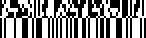

Scan Composite Codes
Note
Composite codes are only supported in BarcodeCapture.
The Scandit Data Capture SDK supports all GS1 Composite Codes as defined in ISO/IEC 24723:2010. The specification defines three different types: A, B and C.
Before you start…
To get the most out of this guide, we recommend that you have read the following articles:
Available Composite Codes
As mentioned above there are three types of composite codes.
GS1 Composite Code A (CC-A) |
|
|
 |
GS1 Composite Code B (CC-B) |
|
|
|
GS1 Composite Code C (CC-C) |
|
|

|
For composite code A and B the 2d component is always a MICRO_PDF417. The 1d component can be any of the following symbologies:
For composite code C the 2d component is always PDF417 while the 1d component is CODE128.
Enabling Composite Codes
Composite code scanning is enabled in the BarcodeCaptureSettings. There are two parts to enable them:
One or more composite types need to be enabled through enabledCompositeTypes
The symbologies associated with those composite types need to be enabled through enableSymbologies().
For example if scanning of composite code A should be enabled:
First CompositeType.A is enabled with a call to enabledCompositeTypes
With a call to enableSymbologies() passing CompositeType.A the following symbologies will be enabled (see also previous section):
The same can be accomplished by individually enabling all of these symbologies with enableSymbology(). enableSymbologies() is simply a convenience function to enable all at once for a certain composite type. If you only want to scan a subset of the possible symbologies of a composite type then you should only enable those. It is not possible to disable a specific symbology, like Symbology.GS1_DATABAR_EXPANDED for CompositeType.A but keep it enabled for CompositeType.B, it is either enabled for both or neither.
The following lines of code show you how this is done to enable scanning of composite codes A and C. Composite code B will not be recognized in these examples as CompositeType.B is not enabled:
BarcodeCaptureSettings settings = new BarcodeCaptureSettings();
EnumSet<CompositeType> compositeTypes = EnumSet.of(CompositeType.A, CompositeType.C)
settings.setEnabledCompositeTypes(compositeTypes);
settings.enableSymbologies(compositeTypes);
Note
Enabling composite codes will slow down the recognition of non-composite codes slightly because the Scandit Data Capture SDK needs to make absolutely sure that no composite code was missed. If you are not expecting composite codes, you should not enable them.
Improving Composite Code Recognition Rate
The Symbology.MICRO_PDF417 is contained in all composite code A and B but is generally not very easy to recognize in a large scan area because of its compressed size. To improve the recognition rate it is advised to restrict the scan area when scanning Composite Code A and B which is best done through a rectangular location selection.
Reading Composite Code Data
When composite codes are enabled the Scandit Data Capture SDK automatically couples the composites to the main code and returns the composite’s data through Barcode.compositeData and Barcode.compositeRawData. There are two potential cases when a barcode of a symbology with enabled composite extension is returned:
The barcode has a composite and is returned with composite data
The barcode does not have an composite and is returned without composite data
Inside BarcodeCaptureListener.onBarcodeScanned() the data can be retrieved from the recognized barcode as follows:
Barcode barcode = session.getNewlyRecognizedBarcodes().get(0);
String data = barcode.getData();
String compositeData = barcode.getCompositeData();
if (compositeData != null) {
// Do something with the data & compositeData.
} else {
// Do something with just the data.
}
Avoiding the Scanning of Barcodes without Composite
For a use-case where only composite codes should be scanned but no single barcodes, the same type of rejection as shown in the Barcode Capture Reject Sample can be used.
If composite data is available:
Manually emit feedback
Change the overlay’s brush to the default
If no composite data is available:
Don’t emit any feedback
Change the overlay’s brush to transparent